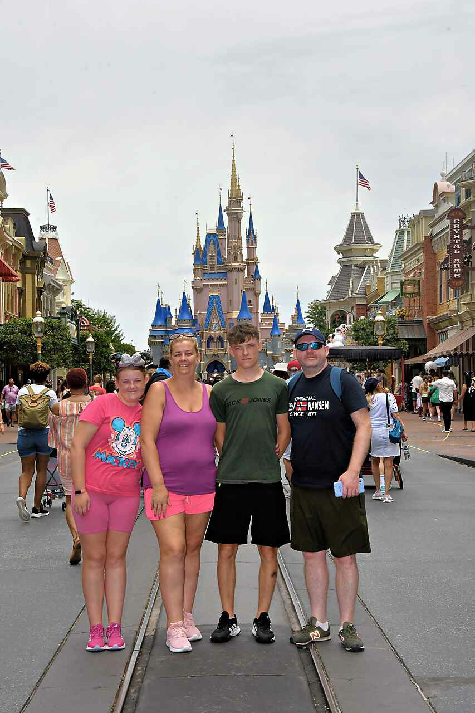
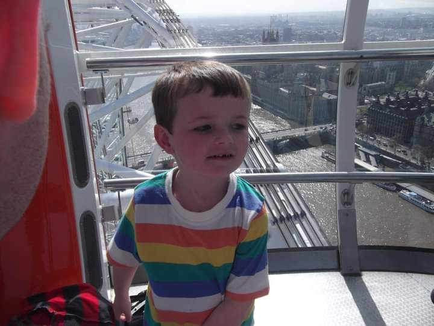
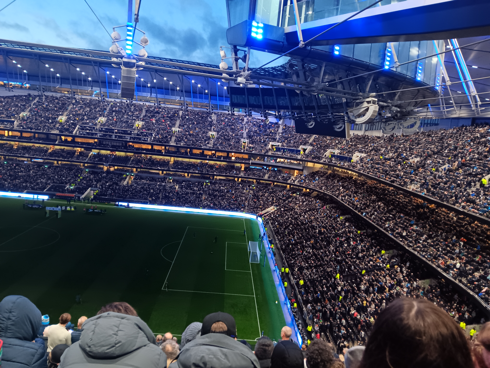

About
Welcome Page
This page included:
- A dynamic welcome message that displayed the users name if entered, it also just displayed a generic message if no name is entered.
- Image rollover, the image on this page swaps out when the cursor is hovering over it.
- A collapsible box containing information about the website.
Data Page
This page included:
- An array of objects that automatically display as cards using handlebars.
- A search by name feature that updates with each input
- A filter by continent feature, a dropdown menu that displays only cities in the continent chosen.
- A sort button that sorts the cities by population in both ascending and descending order.
- A clear button that sets the cards back to their original position.
- A delete button that allows you to remove the object you click delete on.
- An add record button that displays a form that can be filled out, it then creates a new object and card using the inputted data.
- A facts section that uses calculations to display information about the cities, it updates with any changes.
About Page
This page included:
- An image carousel.
- A comment feature that displays new comments instantly.
- Basic use of Typed.js plugin for intro to this page.
My name is Cian.
I am a Software Systems Development student and this is an assignment for my Website
Development 2 Module
I have always loved travelling, this is clear from the pictures below, these are all photos
of me travelling to various places over the years, this love of mine is what made me decide
to base this website on some of the great cities in the world.
Some of the places I have been to include.
- Spain
- UK
- USA
- Italy
Among others...



Some of my favourite pictures from my travels!
| Name | Comment |
|---|